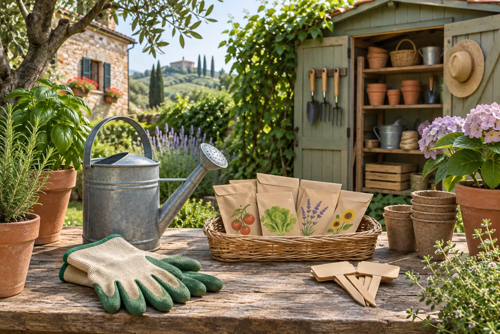

A horta do Max
 Eu sou o Max. O OrtoFirst é meu caderno da horta, da volta das compras até a colheita.
Eu sou o Max. O OrtoFirst é meu caderno da horta, da volta das compras até a colheita.
Na Entrada registro sementes, substrato e ferramentas. Se tiver código de barras, eu escaneio. Anoto onde guardo o produto e, se precisar, a validade ou uma observação.
Na Baixa registro o que usei, mesmo que seja meio sachê, ou mudo uma embalagem de lugar. Antes de comprar mais, consulto oEstoque e anoto o que falta na Lista de compras. NaAgenda guardo as datas das tarefas e as anotações para a próxima temporada.
EatMeFirst
«Criamos o OrtoFirst como um aplicativo gratuito para a horta, com base nas funções do EatMeFirst. Com o EatMeFirst, você pode organizar a despensa, ver o que já tem, conferir os prazos de validade e montar a lista de compras. As funções básicas são gratuitas e as alterações são salvas na hora no navegador.»
Agenda da horta
«Preparei uma agenda de exemplo para você ver como ela funciona e o que dá para escrever. Veja nas telas como anoto semeaduras, transplantes, regas e colheitas e onde encontro as fichas depois de salvar.
Se errar uma data ou quiser corrigir uma anotação, abra “Ver fichas” e escolha “Editar”. Você também pode excluir a ficha e começar de novo. Depois de algumas tentativas, fica rápido preencher.»
Fichas da agenda
Hoje e próximas tarefas
Tarefas passadas e anotações
Arquivo da agenda
Entrada de produtos da horta
Quando voltar das compras, registre os produtos da horta. Escaneie o código de barras, se houver, ou digite o nome.
Baixa de produtos da horta
«Escolho um produto. Se usei só um pouco de inseticida ou algumas sementes, toco em “Uso parcial” e indico quanto sobrou naquela embalagem.»
Estoque da horta
«Aqui confiro quanto sobrou e onde guardei. Quando uso alguma coisa, registro na Baixa.»
Lista de compras da horta
«Aqui você pode anotar o que quer comprar na próxima vez. A lista também é preenchida à medida que você confirma na Baixa que um produto acabou. Marque cada item quando o colocar no carrinho. Ele aparece riscado no fim da lista.»